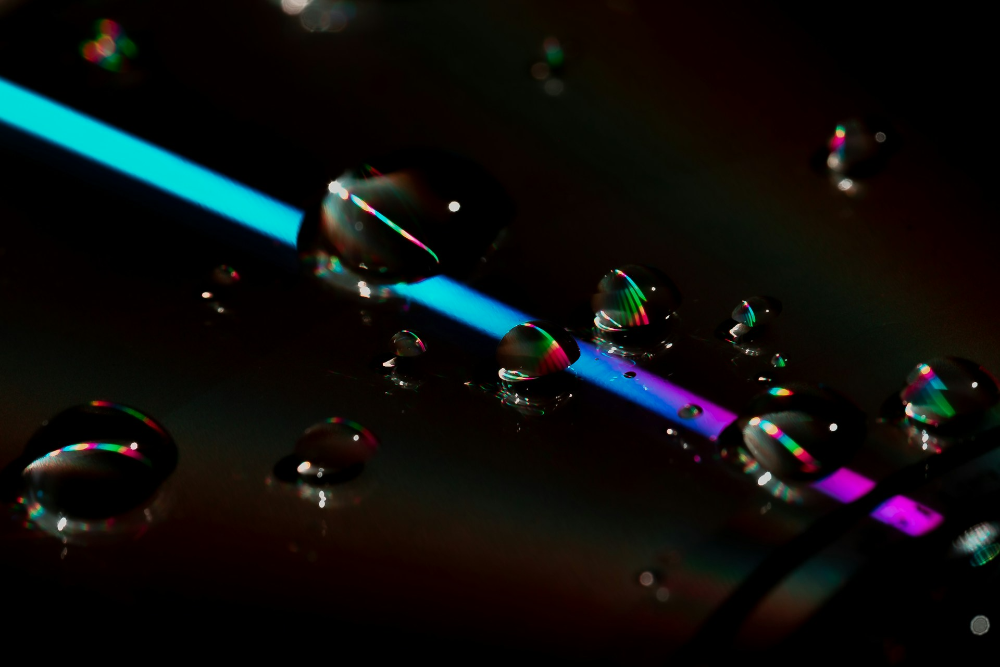
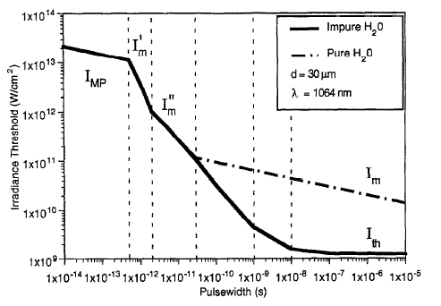
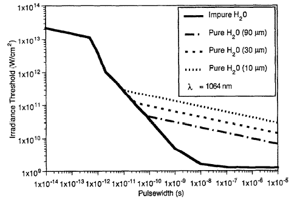
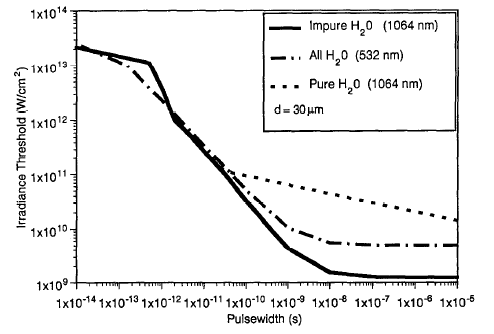

Optical Breakdown Threshold in Water

Absorption Mechanisms
Multiphoton Ionization
Multiphoton ionization (MPI) is a key first step in laser-induced plasma (LIP) [1-4]. This process occurs when a valence electron absorbs multiple photons simultaneously, leading to ionization. The probability of ionization via MPI is proportional to \(I^{k}\) (where \(I\) is the laser intensity while \(k\) is the minimum number of photons required whose total energy meets or exceeds the ionization energy of the valence electron. For example, consider the MPI process for sodium (Na). The first ionization energy \((\text{E}_{ion})\) of Na is ~ 5.14 eV. To ionize a valence electron from the ground state \((\text{E}_{0})\) to the free state, the simultaneous absorption of five photons from a 1064-nm laser pulse is necessary.
MPI is a nonlinear optical process that becomes prominent at extremely high laser intensities, resulting in a higher breakdown threshold compared to the cascade ionization (CI) mechanism. Additionally, MPI dominates in the femtosecond regime, where the ultra-short laser pulse duration is insufficient to sustain the cascading free electron generation necessary for CI. Consequently, MPI is the primary absorption mechanism under such conditions.
Cascade Ionization
In pure water, seed electrons are primarily generated through the multiphoton ionization (MPI) of water molecules. In contrast, in water containing impurities, seed electrons are more likely produced through the ionization of impurities by thermal excitation, which establishes an initial density of free electrons within the laser’s focal volume. Notably, achieving multiphoton initiation of cascade ionization (CI) in pure water requires significantly higher laser intensities. However, the presence of impurities can drastically lower the breakdown threshold and facilitate plasma formation by providing additional seed electrons. For instance, saline water demonstrates this phenomenon effectively. In such cases, seed electrons originate from the ionization of easily ionizable elements (EIE), such as sodium. These free electrons, liberated from the outermost shells of Na atoms, acquire sufficient kinetic energy through inverse Bremsstrahlung (IB) absorption—a process in which seed electrons absorb laser photons during collisions with heavy particles like molecules or ions. This energy gain enables the electrons to produce a cascade of additional free electrons, ultimately resulting in water breakdown.
For breakdown to occur, the rate of electron energy gain via IB absorption must exceed the rate of energy loss due to inelastic collisions. Similarly, the ionization rate must surpass the loss of free electrons through electron-ion recombination and diffusion out of the focal volume. Consequently, the laser intensity within the focal volume must be sufficiently high to drive these energy gains and maintain a net increase in free electrons. Finally, CI is the dominant breakdown mechanism in most scenarios, especially when long-duration laser pulses (in the nanosecond regime) are employed.
Breakdown Threshold
In this section, we summarize some published theoretical modeling results and experimental measurements of breakdown thresholds in water. Before going any further, it is important to remember that for aqueous solutions, in the nanosecond regime, the breakdown threshold is significantly higher for MPI compared to CI. As the duration of the laser pulse decreases, MPI begins to dominate the IC mechanism, both for pure water and for water with impurities. In addition, the uncertainty associated with the search for seed electrons in the focal volume at a given time makes breakdown by CI a probabilistic process, which defined breakdown threshold in terms of breakdown probability.
Optical breakdown
Breakdown threshold in water can be defined experimentally as the minimum laser intensity required for observing a spark, the signal emitted by plasma (which rather refers to the plasma emission threshold), the appearance of bubbles in water, the production of shock waves or the generation of acoustic sound. Breakdown defined as the appearance of a spark visible to the naked eye or detectable by an optical imaging system is the approach commonly used by many authors. In contrast, in theoretical modeling, the breakdown threshold is commonly defined as the minimum laser intensity required for the production of a sufficiently dense plasma to significantly absorb laser photons. The latter is typically defined by a critical free electron density \(N_{cr}\) of approximately \(10^{19}-10^{20} \text{cm}^{3}\) in the focal volume, which has a cylindrical shape given by [1]:
\[V = (\sqrt{2}-1)\frac{πd^{2}}{2}\frac{f^{2}\theta}{D_{0}}\] where \(d\) is the beam spot size, \(f\) is the focal length of the focusing lens, \(\theta\) is the beam divergence and \(D_{0}\) is the unfocused beam diameter.
Rate equations
The rate equation of free electrons density under the MPI mechanism is expressed by [1]:
\[\frac{\text{d}}{\text{dt}}(N_{mpi}) = \frac{2 \omega}{9 \pi} \left( \frac{m^{'}}{ℏ} \right )^{3/2} \left( \frac{e^{2}}{16nc\epsilon_{0}m^{'} \Delta E \omega^{2}} \right)^{k} I^{k}e^{(2kI)} \Phi \cdot \sqrt{2 \left( k-\frac{\Delta E}{ℏ\omega} \right)}\] with, \(\Phi(x) = e^{(-x^{2})}∫_{0}^{x}e^{y^{2}}\text{d}y\), and \(m^{'} = \frac{m_{e}m_{ℏ}}{m_{e} + m_{ℏ}}\), where \(\omega\) is the angular frequency of laser light, \(I\) is the laser intensity, \(m^{'}\) is the reduced exciton mass, \(e\) is the electron charge, \(n\) is the refractive index of water, \(c\) is the velocity of light, \(k\) is degree of non-linearity of MPI (i.e. the smallest number of laser photons required for MPI), \(ℏ\) the reduced Planck constant, \(\epsilon_{0}\) is permittivity of free space and \(\Delta E\) is the ionization potential of water. While the rate equation under CI mechanism is expressed by [1]:
\[N_{ci} = \frac{1}{\omega^{2}\tau_{m}^{2} + 1} \left( \frac{e^{2}\tau_{m}}{cnm\epsilon_{0} \Delta E} I - \frac{m \omega^{2} \tau_{m}}{M} \right)\] where \(\tau_{m}\) is the mean free time between electron-heavy particle collisions, \(M\) is the mass of the liquid molecule, and \(m\) is the electron mass. Following the above equations, the rate equation under the combined effect of both MPI and CI mechanisms is expressed as [1]:
\[\frac{\text{d}}{\text{dt}}(N_{e}) = \frac{\text{d}}{\text{dt}}(N_{mpi}) + N_{ci}N_{e} - (RN_{e} + D)N_{e}\] where \(N_{e}\) is the free electron density, \(D\) and \(R\) are losses by diffusion and recombination, respectively.
Breakdown threshold dependence
The laser intensity threshold required for the optical breakdown and plasma formation is a function of both the characteristics of the liquid (ionization energy, level of impurities) and the characteristics of the laser beam (wavelength, pulse duration, and spot size).
Pulse duration and impurity dependence

Pulse duration and spot size dependence

Pulse duration and wavelength dependence

Summary
This post highlights the strong dependence of the breakdown threshold on the duration of the laser pulse. When using ultrashort pulses in the femtosecond range, a significantly high-intensity laser source is required in the focal volume due to the dominance of multiphoton ionization as the primary absorption mechanism. This also explains why laser sources in the Visible or UV range, which provide higher-energy photons, are more effective for such applications than IR sources. In contrast, laser pulses in the nanosecond regime allow for a lower breakdown threshold by leveraging the thermal excitation of impurities present in the water. However, it is essential to conduct measurements well above the breakdown threshold, as the threshold itself is governed by probabilistic mechanisms, unlike the more deterministic breakdown behavior observed in the femtosecond regime.
References
Gaabour, L. H., Gamal, Y. E. E. D. & Abdellatif, G. Numerical Investigation of the Plasma Formation in Distilled Water by Nd-YAG Laser Pulses of Different Duration. J Mod Phys 03, 1683–1691 (2012).
Hammer, D. X. et al. Experimental investigation of ultrashort pulse laser-induced breakdown thresholds in aqueous media. IEEE J Quantum Elect 32, 670–678 (1996).
Vogel, A., Nahen, K., Theisen, D. & Noack, J. Plasma formation in water by picosecond and nanosecond Nd:YAG laser pulses. I. Optical breakdown at threshold and superthreshold irradiance. IEEE J Sel Top Quant 2, 847–860 (1996).
Kennedy, P. A first-order model for computation of laser-induced breakdown thresholds in ocular and aqueous media. I. Theory. Progress in Quantum Electronics (1995).